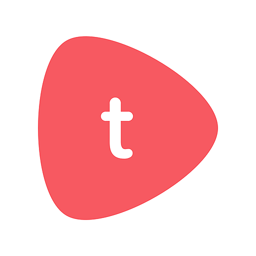

Sheen Kher
writes the plan,
not just the page.
A working document of how I think about content strategy in a search landscape where AI answer engines now decide what a buyer sees before they ever visit a website.
How I Became a Strategist
I've always been curious about what influences people's decisions. Why two companies offering similar products can earn very different levels of trust. Why one brand becomes memorable while another is forgotten. Even as a child, I found myself noticing which neighbourhood stores people kept returning to and wondering what made them choose one over another. Long before I knew what marketing was, I was already interested in understanding how people made decisions.
Writing became the way I explored those questions. I found it easier to think through ideas on paper than in conversation, so it naturally became my first career. I started as a digital content writer before moving into a content editor role, where I learned the fundamentals that continue to shape how I approach content today: understanding search intent, conducting keyword research, structuring information, and writing for both readers and search engines.
The shift from creating content to building strategy happened during the Vedica Scholars Programme. My capstone project involved developing a complete digital marketing strategy for Mr. K Ramyun, a niche Korean restaurant in Delhi. It was the first time I owned the entire process, from audience research and positioning to channel strategy and campaign planning. The project received the highest evaluation in my cohort, but more importantly, it showed me how much I enjoyed solving business problems through structured thinking rather than focusing on individual content pieces.
That shift continued through the projects I took on afterwards. At NurseEdge, I planned LinkedIn content calendars and developed long-form content designed to support career growth for nurses. While working with Shiksha.com under the mentorship of Sumeet Singh, CMO at InfoEdge, I conducted competitor research that informed a cross-platform content strategy implemented by the marketing team over the following months. These experiences taught me that successful content rarely begins with writing. It begins with understanding the audience, the market, and the problem the business is trying to solve.
Joining Toddle gave me the opportunity to think beyond individual articles and focus on building content systems. As Program Manager for the Content Library, I worked on creating a self-service content architecture that helped educators discover information more efficiently while supporting product adoption at scale. The project required close collaboration across product, curriculum, design, and engineering teams, reinforcing my belief that great content is rarely created in isolation. It is the outcome of strong systems, clear processes, and cross-functional collaboration. That work forms the case study featured below.

ToddleWhile improving knowledge architecture inside the product, I became increasingly interested in how the same principles applied outside it. I noticed that the clearer our content structure became, the easier it was for users to find answers. The same principles were beginning to shape how AI assistants discovered and cited information. That curiosity led me to explore AI Search Optimization, where structured content, topical authority, and semantic relationships determine how information is surfaced across platforms like ChatGPT, Gemini, and Google AI Overviews.
Looking back, every role has reinforced the same belief: content performs best when it is built with intention. Whether I'm developing an editorial strategy, designing a content system, or planning for AI search, I start with the same questions: Who is this for? What problem does it solve? How will we know it worked? Those questions continue to guide the way I approach strategy today.
How I approach content strategy
Business goal
What outcome content is meant to move (pipeline, retention, authority) before any topic list exists.
Audience research
What buyers ask a search engine versus an AI assistant, and where those behaviors diverge.
Architecture
Topic clusters and entity relationships, the skeleton the calendar hangs on.
Execution
Dual optimization: satisfying ranking algorithms and AI extraction at once.
Measurement
Review what moved, and be willing to kill or redirect a plan that isn't earning its budget.
Case Study
Scaling an Assessment Content Library
How I transformed a growing assessment content library into a structured, scalable system with standardized workflows, documentation, and content architecture.
Read Full Case Study →Preparing content for AI powered discovery
Entity optimization
Naming people, products, and concepts clearly so AI systems can confidently identify what a page is about.
Schema markup
Structured data, especially FAQPage, used only where content genuinely matches the format.
Topical authority
Clusters that fully cover a subject's question tree, not single pages hoping to rank alone.
Citation potential
Direct, extractable answers near the top of a section, readable correctly even quoted out of context.
Structured content & FAQs
Clear heading hierarchy and genuine FAQs anticipating what a buyer would ask an AI assistant.
E-E-A-T
Real experience and expertise in the content itself: credible sourcing, named authorship, specificity.
Writing samples
Turning strategy into a roadmap
A roadmap that prioritizes topics by funnel stage, spreads formats across blog, LinkedIn, YouTube, and Reddit, and tags each piece with the specific reason it is likely to earn an AI citation.
View the full editorial calendar →How great content gets produced
Ideation & research
Topics sourced from the roadmap and checked against real search and AI query behavior. AI tools speed up research synthesis, the topic call stays human.
Brief & draft
A structured brief before drafting. AI accelerates the first draft structure, argument and nuance stay human.
SEO & AEO pass
Headings, schema candidates, and entity clarity reviewed against citation readiness before anything moves forward.
Stakeholder review
Business and subject matter review for accuracy, the point where a plan gets defended or adjusted.
Publish & track
Goes live with schema, links, and metadata already in place. Rankings and AI citations are tracked and fed back into the next round.
Improving content with strategy
A working set of patterns I rely on to turn generic marketing copy into content structured for both search rankings and AI citation: intros, titles, headings, evidence, comparisons, and calls to action.
Read all eleven rewrites →Measuring what matters
Traffic and rankings tell me if content is findable. Engagement and conversion tell me if it's useful. AI citation count tells me whether it's trusted enough to be handed to a buyer secondhand, before they ever visit the site.
Continuous improvement, and where this is headed
The biggest shift in how I think about content strategy isn't a new tactic, it's a change in who counts as "the reader." A meaningful share of buyer decisions now happen inside an AI system before a human lands on a page, which makes structure and trustworthiness strategic decisions, not formatting details.
If this way of thinking about content is what you're looking for on your team, I'd love to get in touch. kher.sheen@gmail.com
Editorial note
The editorial calendar, content rewrites, and performance dashboard on this page are illustrative samples, clearly labeled throughout, built to demonstrate how I think and work rather than to represent a real client engagement. The Toddle case study is real work. Most of my other original writing and strategy work cannot be shared here due to content confidentiality agreements with previous employers, which is exactly why these samples exist: to show the same thinking and craft in a form I am free to share.